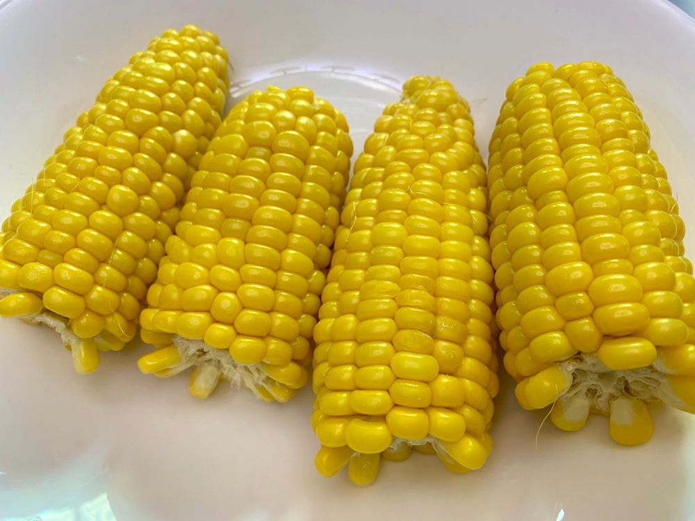

초당옥수수 식히면서 쓰는 메일
ㅋㅋㅋㅋㅋㅋㅋㅋㅋㅋㅋㅋ
일단

샛노란 이 초당 옥수수부터 봐주세요 ㅋㅋㅋㅋㅋ
저는 인생에서 초당옥수수 오늘 처음 먹어보는데요!!!!
완전 신기해요
초당 옥수수는 생으로 먹어도 된대요~~~
여기서 저는 엥??? 싶었어요 어떻게 생으로 먹지??
라고 생각했는데
껍질 까자마자 노란 알맹이가 나오고
수긍했죠 ㅎㅎ ' 아하 생으로 먹어도 되는 구나 '
그렇지만 저는 요 친구들을 한 번 씻고
반 갈라서
( 한 옥수수당 3분 잡고 )
유리그릇에 6분 렌지에 돌렸답니다
진짜 식감이
옥수수 한 알 한 알 정성스럽게 토독토독 터져요
그래서 가끔 잘못 베어 물으면
옥수수 국물이라고 해야하나
그게 쭉 튀어나가기도ㅋㅋㅋㅋㅋㅋㅋ
초당옥수수 자체에 수분과 당도가 엄청나서
물에 삶는 것보다
물에 한 번 씻고 렌지에 돌리는 걸
추천합니다 ㅎㅎ
아무튼 신기방기 하네요
ㅋㅋㅋㅋㅋㅋㅋㅋㅋㅋㅋ
유진이 초당옥수수 너무 먹고 싶어했는데
유진이가 어서 먹어보고 후기 생생하게 알려줬으면 좋겠다 ㅋㅋㅋㅋㅋㅋㅋㅋㅋㅋㅋㅋㅋ
반응 궁금하구만
역시 난 구황작물 킬러 빵야빵야